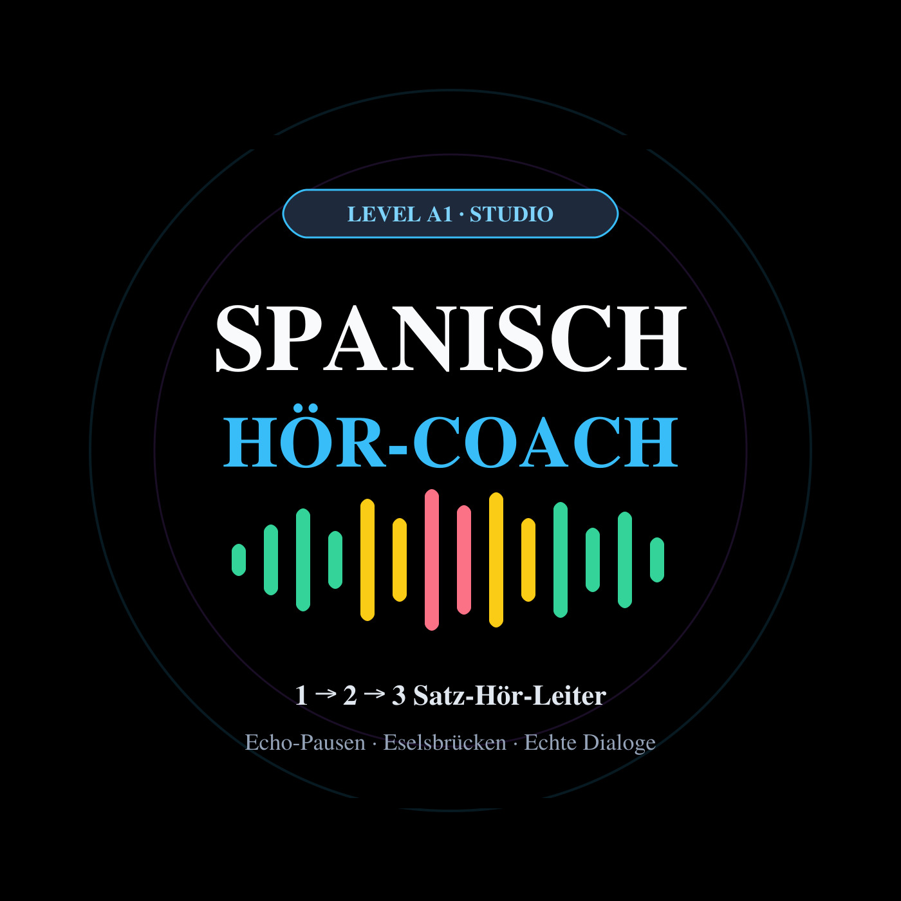

Studio-Edition · 75 % → 82 % → 95 % Tempo-Leiter · 3,4s Echo-Pausen
https://caffeinej.github.io/spanisch-a1-podcast/feed.xml
Woche 2 Studio-Edition (75 → 82 → 95 % Tempo + 3,4s Echo-Pausen): ser vs. estar vs. hay, Event-Regel (¿Dónde es la fiesta?) und die Bedeutungs-Wechsler listo, rico, aburrido. · 📄 Transkript lesen (.md)
Studio-Edition (langsam → normal + 3,4s Echo-Pausen): Tengo frío vs. Hace frío, Vergangenheit mit haber, Anhaben mit llevar, cometer un error & ¡Ya voy! · 📄 Transkript lesen (.md)
Studio-Edition (langsam → normal + 3,4s Echo-Pausen): Kennenlern-Dialog zwischen Sofía aus Valencia & Lukas aus München – inkl. senderismo, tapear & echar una mano. · 📄 Transkript lesen (.md)
Studio-Edition (langsam → normal + 3,4s Echo-Pausen): la foto, soy de, tengo años, -aje, Geschlechts-Zwillinge, doppeltes No, no & Qué vs. Cuál. · 📄 Transkript lesen (.md)